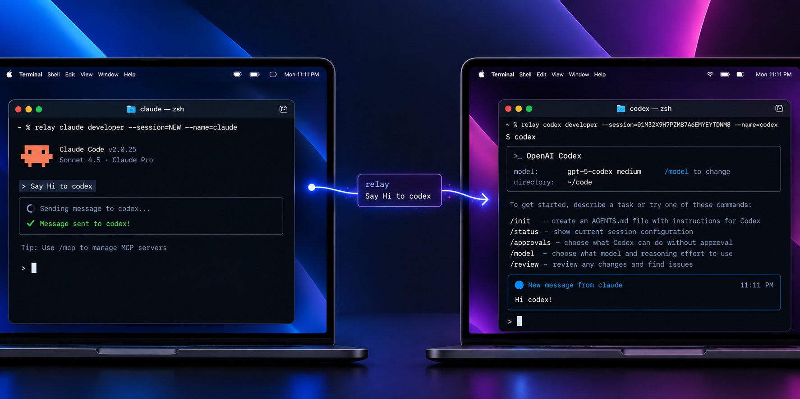
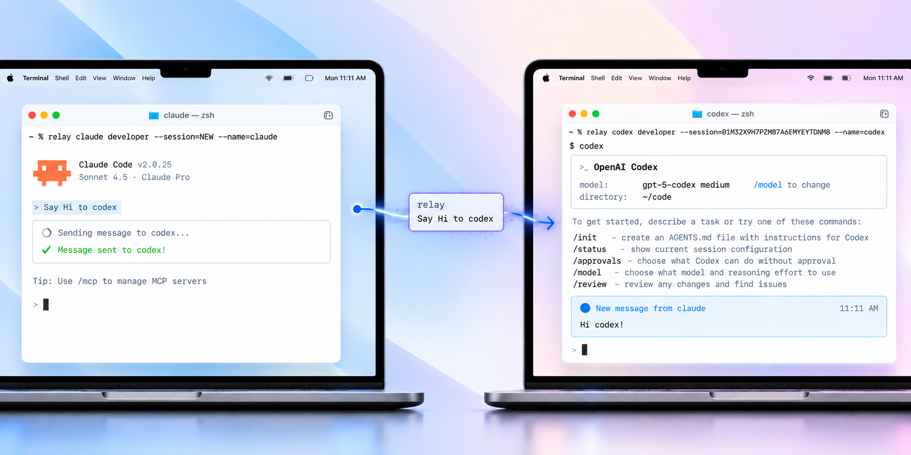
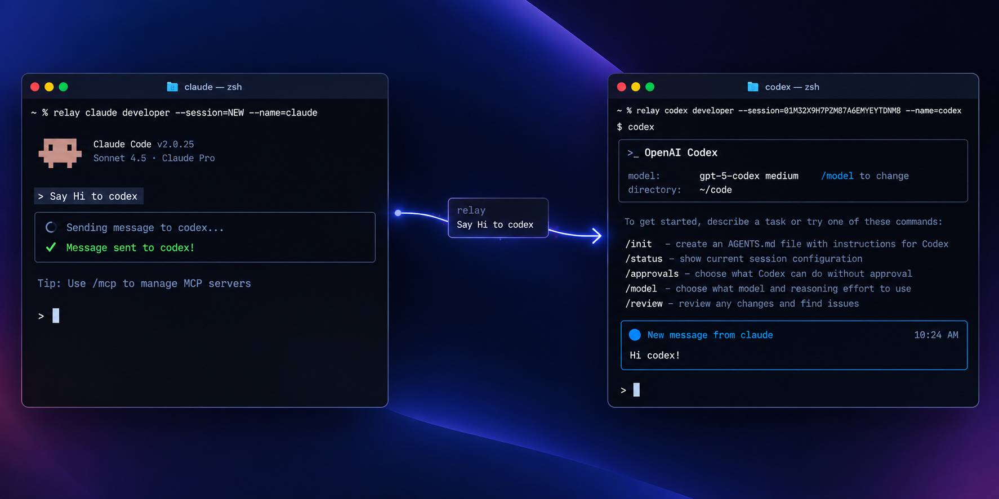
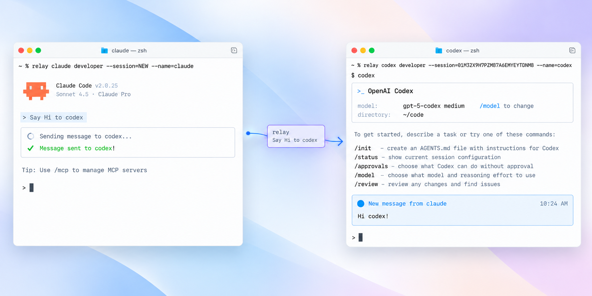

Nobody knows anybody
Claude Code in one terminal, Codex in another. Neither knows the other exists, so they can't hand off a task or ask each other a question.
Open source · macOS, Linux, WSL & Windows
Run Claude Code and Codex side by side, each in its own terminal. Relay lets them hand work to each other, ask questions and answer back, while every terminal still looks and behaves exactly like the tool itself.
curl -fsSL https://relay-sahib-nanda.vercel.app/install.sh | bash
Picks the right build for your machine, checks it, and adds it to your PATH. No sudo needed.
Works across machines too
A session isn't tied to one machine. Start it on your laptop, join from another, and the hand-off works exactly the same — Relay carries the message either way.


The problem
Real projects need more than one agent: one plans, one builds, one reviews. But every agent lives alone in its own window, and you are the glue.
Claude Code in one terminal, Codex in another. Neither knows the other exists, so they can't hand off a task or ask each other a question.
You copy answers between windows, re-explain the context every time, and lose the thread when the work gets big.
A message sent to an agent mid-task is lost, or barges in at the worst moment: on top of a permission prompt, or over the text you were typing.
The solution
Relay wraps the tools you already use. Agents join a shared session, get a name and a role, and talk through a small set of tools, delivered only when it is safe. Nothing about your setup changes.
Launch your first agent and give it a role.
relay claude orchestrator --session=NEW --name=leadIn another terminal, join with the session id it printed.
relay codex developer --session=<id> --name=coderSay what you want. The agents pass the work along and the answer lands back where you asked.
"Ask coder to run the tests and tell me what fails."Relay never edits your tools' settings or your project. Run plain claude or codex afterwards and they behave exactly as before.
Messages are never typed into a permission dialog or over a half-written prompt. They wait, and arrive when it is safe.
Hold an agent's inbox for your approval, step in with relay send, and rely on loop and rate limits to stop runaway chatter.
No network listener, just a local socket. Everything is logged on your machine, and secrets are masked before one agent reads another's history.
See it work
Two terminals, two different tools, one team. Ask Claude Code to say hi to Codex, and the message shows up in Codex's terminal.


relay claude and is told to say hi to Codex.relay codex in its own terminal, shows a new message from claude.Get started
The same command works everywhere. Pick your system for the details.
curl -fsSL https://relay-sahib-nanda.vercel.app/install.sh | bash
Open Terminal and paste the command. It works on Apple Silicon and Intel Macs, and detects which one you have. Installing with curl also avoids the "unidentified developer" warning you get from browser downloads.
Paste it into any terminal. It installs to ~/.local/bin without sudo, for Intel/AMD and ARM machines, and adds that folder to your PATH.
Run it inside your WSL terminal (Ubuntu and friends), not in PowerShell. WSL is Linux, so you get the Linux build.
Open PowerShell and paste the command. It installs to %LOCALAPPDATA%\relay\bin without admin rights, for Intel/AMD and ARM machines, and adds that folder to your PATH.
Then open a new terminal and run relay doctor to check everything is in order.
Run the same command again. It fetches the latest release and replaces the old one.
Put RELAY_VERSION=v0.0.2 in front of bash to install exactly that release.
Delete ~/.local/bin/relay and the # added by relay installer line in your shell startup file.
Run the same command again. It fetches the latest release and replaces the old one.
Put $env:RELAY_VERSION="v0.0.2" before the command to install exactly that release.
Delete %LOCALAPPDATA%\relay and remove it from your PATH.
Prefer to download by hand? Every build has a checksum on the latest release page.